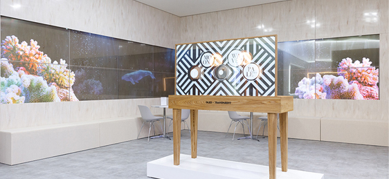
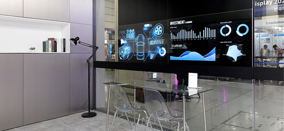
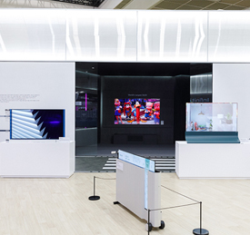
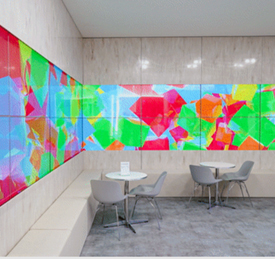

"OLED 중심의 차세대 디스플레이를 포함한 혁신 기술 개발로
미래를 준비하고 새로운 시장을 창출해 나가야 합니다."
LG디스플레이 정호영 사장은 K-Display 2022 한국디스플레이산업전시회(이하 K-Display 2022)' 환영사에서 OLED 디스플레이의 시장 잠재력에 대해 이같이 말했습니다.
OLED 디스플레이가 다양한 기술 산업 분야의 새로운 미래 시장을 열어가는 데 중추적 역할을 할 것임을 천명한 것입니다. 아울러 전통적인 TV 모바일 시장에서 벗어나 모빌리티, 건축, 인테리어 등 다양한 분야에서 융복합 협업으로 새로운 시장을 창출해야 한다고 강조했습니다. LG디스플레이의 차별화된 OLED 기술력이 가져올 미래 변화상은 과연 어떠할지, 그 성장 잠재력을 확인해보시죠.
K-Display 2022에서 환영사를 하는 LG디스플레이 정호영 사장
K-Display 2022에서 환영사를 하는 LG디스플레이 정호영 사장
OLED가 만들어가는 일상 공간의 미래상
LG디스플레이는 지난 8월 10일 서울 코엑스에서 열린 K-Display 2022에서 차세대 패널 OLED.EX와 투명 OLED를 탑재한 디스플레이 기술을 대거 선보였습니다. OLED.EX와 투명 OLED 등이 구현하는 혁신적 변화와 새로운 고객 경험을 선사하기 위해 도시를 형상화한 역대 최대 규모(약 320m2)의 부스를 마련했는데요, 전시 부스는 'OLED.EX타운''투명 OLED타운''OLED 플라자' 등 3개의 공간으로 구성했습니다.
도시를 형상화 한 테마공간 구성을 통해 다양한 혁신 기술과 제품을 선보인 LG디스플레이 부스
도시를 형상화 한 테마공간 구성을 통해 다양한 혁신 기술과 제품을 선보인 LG디스플레이 부스
OLED가 만들어가는 일상 공간의 미래상
'OLED.EX타운'에 들어서는 순간, 눈을 사로잡는 건 97인치 OLED.EX의 시원스러운 대화면이었습니다.
현존 최대 크기의 OLED TV 패널로, 국내에선 처음 공개되었죠. 별도의 스피커 없이 화면 자체에서 소리를 내는 '필름 CSO(Cinematic Sound OLED)' 기술로 5.1채널의 입체감 있는 음향까지 더했습니다. 관람객들은 대화면 디스플레이가 내는 남다른 사운드에 감감을 집중하며 오래도록 몰입하는 모습을 보여주었습니다.
옆 벽면에서 게이밍에 최적화된 48인치와 42인치 OLED.EX도 함께 전시해 초대형부터 중소형까지 모두 아우르는 LG디스플레이만의 OLED TV 패널 풀라인업을 선보였습니다.
현존 최대 크기의 97인치 OLED.EX(왼쪽)와 게이밍에 최적화된 48인치 및 42인치 OLED.EX
현존 최대 크기의 97인치 OLED.EX(왼쪽)와 게이밍에 최적화된 48인치 및 42인치 OLED.EX
진화하는 디테일, EX 테크놀로지
OLED.EX는 스스로 빛을 내는 유기 발광 소자에 중수소 기술과 개인화 알고리즘으로 이뤄진 'EX테크놀로지'를 적용한 패널입니다. 기존 OLED와 비교해 화면 밝기는 30% 높이고, 자연의 색을 더욱 정교하게 재현했으며, 어떤 환경에서도 완벽한 블랙 컬러를 구현할 수 있다는 점이 주목할 만한 특징입니다.
베젤(테두리) 또한 30%가량 줄여 디자인적으로도 한 단계 진화한 모습을 보여줬습니다. 사용자의 시청 패턴을 학습한 뒤 OLED 소자 3,300만 개 (8K 해상도 기준)의 개별 사용량을 예측하고 제어해 최적화된 밝기와 성능을 유지하도록 하는 개인화 알고리즘 역시 OLED.EX만의 장점입니다.
디테일의 결정체 EX 테크놀로지 적용으로 더욱 몰입감 있는 화면을 제공하는 OLED.EX
디테일의 결정체 EX 테크놀로지 적용으로 더욱 몰입감 있는 화면을 제공하는 OLED.EX
무한한 가능성의 세계, 투명 OLED
'투명 OLED 타운'에서는 쇼핑몰, 사무실 등 다양한 일상 공간에서 활용 가능한 솔루션을 살펴볼 수 있었습니다. 투명 OLED의 폭넓은 확장성을 바탕으로 새로운 고객 경험을 전달하는 공간을 꾸며 마치 미래 세계를 경험하는 듯 했습니다.
특히 많은 관람객이 흥미롭게 지켜본 제품은 '투명 미디어 아트 월'이었습니다. 16장의 투명 OLED를 벽면에 타일처럼 이어 붙인 것으로, 광고 등 다양한 콘텐츠를 보여주면서도 벽면의 디자인과 질감을 그대로 느낀 수 있도록 하는 독특한 제품이어서 이를 배경으로 사진을 찍는 사람도 많았습니다. 포토존으로서 역할을 톡톡히 한 셈이죠.
폭넓은 확장성을 보여준 다양한 투명 OLED 제품 / 투명 OLED를 활용한 투명 미디어 아트월과 투명 쇼케이스
폭넓은 확장성을 보여준 다양한 투명 OLED 제품
투명 OLED를 활용한 투명 미디어 아트월과 투명 쇼케이스
업무 공간이나 상업 시설 등에서 다양한 활용 가능성을 엿볼 수 있는 제품도 전시했습니다. 투명 OLED에 상품 진열대를 결합한 '투명 쇼케이스'는 실제 진열된 상품에 제품 정보, 그래픽 효과 등을 홀로그램처럼 겹쳐 보여줌으로써 광고 효과를 높입니다. '회의실용 투명 OLED 솔루션'도 첫선을 보였습니다. 유리벽에 투명 OLED를 내장해 별도의 TV나 모니터 없이 벽 자체를 디스플레이로 활용할 수 있어 공간 활용도를 높이고 개방감도 확보 할 수 있는 것이 장점입니다. 대형 모니터 없이 화상회의 등 업무 수행도 가능합니다. 투명 OLED를 내장한 모듈러 방식의 인테리어용 패널인 '투명 월스킨'은 사무실, 호텔, 병원, 가정 등에서 활용하기 좋은 제품으로 눈길을 끌었습니다.
전시 상품을 돋보이게 만들며 다양한 정보를 전달하는 투명 쇼케이스 / 유리벽에 내장된 투명 OLED로 공간 활용도를 높인 회의실용 투명 OLED 솔루션
전시 상품을 돋보이게 만들며 다양한 정보를 전달하는 투명 쇼케이스
유리벽에 내장된 투명 OLED로 공간 활용도를 높인 회의실용 투명 OLED 솔루션
다양한 미래형 디스플레이로 가득한 OLED 플라자
'투명 OLED 타운'에서는 쇼핑몰, 사무실 등 다양한 일상 공간에서 활용 가능한 솔루션을 살펴볼 수 있었습니다. 투명 OLED의 폭넓은 확장성을 바탕으로 새로운 고객 경험을 전달하는 공간을 꾸며 마치 미래 세계를 경험하는 듯 했습니다.
특히 많은 관람객이 흥미롭게 지켜본 제품은 '투명 미디어 아트 월'이었습니다. 16장의 투명 OLED를 벽면에 타일처럼 이어 붙인 것으로, 광고 등 다양한 콘텐츠를 보여주면서도 벽면의 디자인과 질감을 그대로 느낀 수 있도록 하는 독특한 제품이어서 이를 배경으로 사진을 찍는 사람도 많았습니다. 포토존으로서 역할을 톡톡히 한 셈이죠.
'OLED 플라자'에서는 다양한 디자인과 기능성이 돋보이는 제품을 전시해 관람객의 시선을 사로잡았습니다. 투명 OLED에 곡선형 선반을 결합한 가구형 디스플레이와 이동식 OLED TV등 6종의 신개념 OLED TV 콘셉트 제품, 55인치 투명 OLED 9대로 홀로그램을 구현한 '투명 포토 월'등 다채로운 미래형 디스플레이를 볼 수 있었습니다.
다양한 디자인과 기능성이 돋보이는 미래형 디스플레이 제품들 / 벽면에 타일처럼 이어붙여 콘텐츠를 비추는 투명 미디어 아트월
-

다양한 디자인과 기능성이 돋보이는 미래형 디스플레이 제품들
-

벽면에 타일처럼 이어붙여 콘텐츠를 비추는 투명 미디어 아트월
차세대 차량용 34인치 커브드 P-OLED
그 밖에 '차량용 34인치 커브드 P(플라스틱)-OLED'와 노트북, 태블릿, 포터블 모니터 등으로 다양하게 활용 가능한 17인치 폴더블 노트북용 OLED 등 폼팩터 혁신 제품도 소개했습니다. 단일 패널로는 세계 최대 크기인 차량용 34인치 커브드 P-OLED에도 많은 관심이 쏠렸습니다.
인체 공학적 설계를 적용해 최대 800R(반지름 800mm인 원의 휜 정도) 곡률로 운전자가 계기판, 내비게이션 등을 한눈에 볼 수 있어 주행 편의성을 극대화했습니다.
단일 패널로는 세계 최대 크기인 차량용 34인치 커브드 P-OLED
단일 패널로는 세계 최대 크기인 차량용 34인치 커브드 P-OLED
디스플레이 산업을 이끌 미래 인재를 만나다
전시장 한쪽에서는 미래 인재 유치를 위한 채용 박람회도 열렸습니다. LG디스플레이를 비롯한 22개 기업의 채용관에 차세대 디스플레이 분야 인재들의 발길이 이어졌죠. 사전에 신청하거나 현장에서 신청한 디스플레이 분야 석사급 인재와 전공 부학생을 대상으로 채용 절차와 직무 진로 내용 등의 상도 이뤄졌습니다. 디스플레이 산업의 미래를 열어갈 예비 인재들의 열정 넘치는 도전을 응원합니다.
지금까지 K-Display 2022 전시회의 LG디스플레이 부스를 둘러보며 LG디스플레이의 OLED 기술이 구현할 미래상을 살펴봤는데요, 날이 갈수록 진화하는 LG디스플레이만의 EX 테크놀로지와 기술적 디테일을 추구하는 집념을 느낄 수 있었습니다. 앞으로 보다 다양한 산업 분야에서 새로운 형태로 만나게 될 OLED 혁신 기술을 기대해봅니다.
LG디스플레이 채용관에서 상담을 받고 있는 취업 준비생들
LG디스플레이 채용관에서 상담을 받고 있는 취업 준비생들
댓글쓰기
이름 : 김엘지 소속 : OLED 기술 Task 직급 : 사원